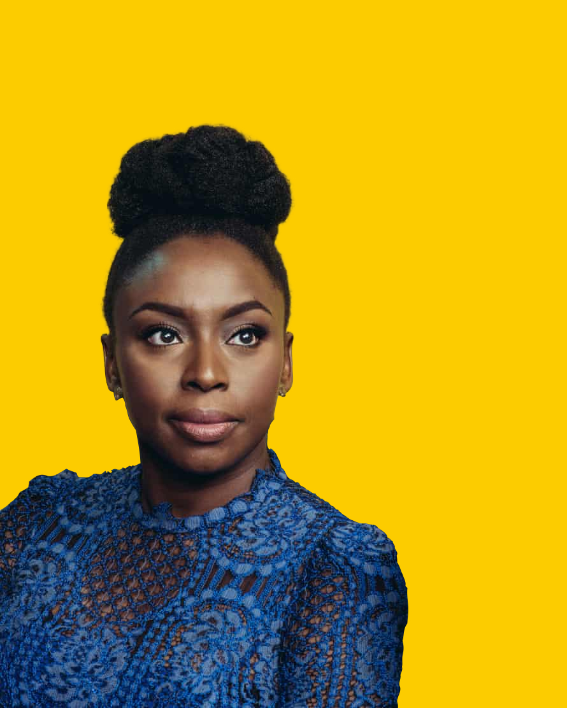
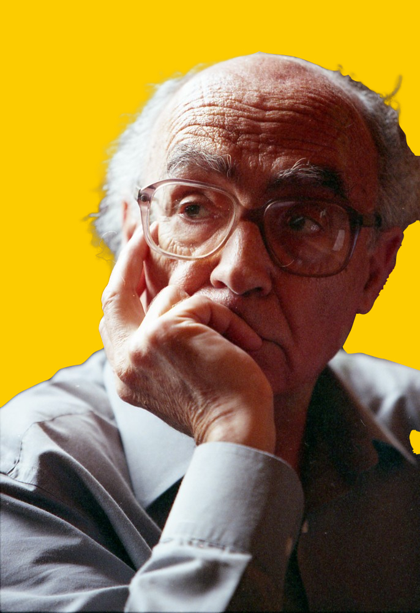
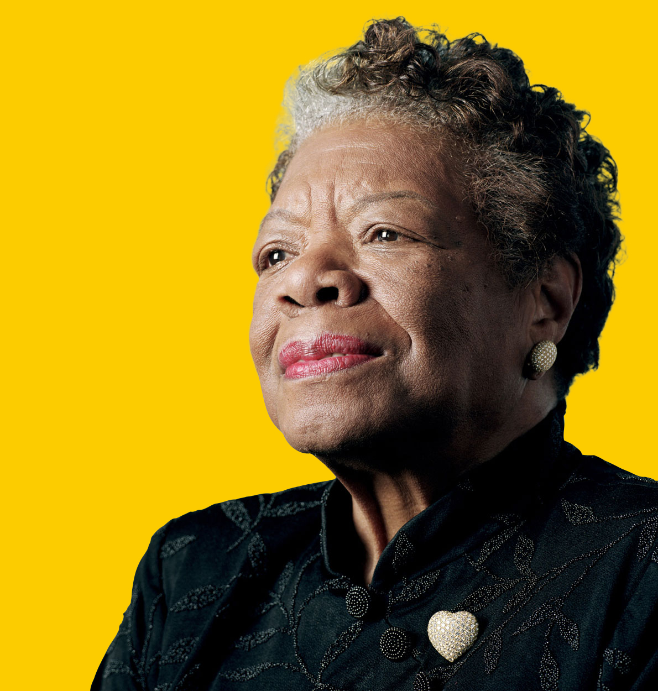
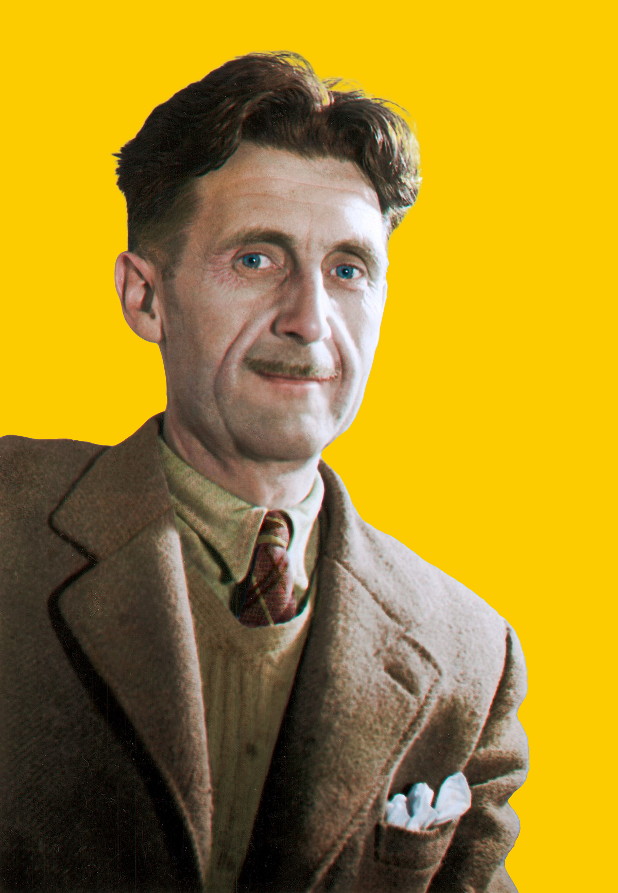

Chimamanda é uma escritora nigeriana, da etnia Igbo, conhecida por seus romances e contos. Nasceu em Enugu, mas cresceu na cidade universitária de Nsukka, no sudeste da Nigéria, onde se situa a Universidade da Nigéria. Seu pai era professor de Estatística na universidade, e sua mãe trabalhava como secretária no mesmo local. Quando completou dezenove anos, deixou a Nigéria e se mudou para os Estados Unidos da América. Depois de estudar na Universidade Drexel, na Filadélfia, Chimamanda se transferiu para a Universidade de Connecticut. Fez estudos de escrita criativa na Universidade Johns Hopkins de Baltimore, e mestrado de estudos africanos na Universidade Yale. Seu primeiro romance, Purple Hibiscus (Hibisco roxo), foi publicado em 2003. O segundo romance, Half of a Yellow Sun (Meio sol amarelo), foi assim chamado em homenagem à bandeira da Biafra, e trata de antes e durante a guerra de Biafra. Foi publicado em 2006 e ganhou o Orange Prize para ficção em 2007.
José de Sousa Saramago é um escritor, roteirista, jornalista, dramaturgo e poeta português. Foi galardoado com o Nobel de Literatura de 1998. Também ganhou o Prémio Camões, o mais importante prémio literário da língua portuguesa. Saramago é considerado o responsável pelo efetivo reconhecimento internacional da prosa em língua portuguesa. O seu livro Ensaio Sobre a Cegueira (Blindness, em inglês) foi adaptado para o cinema e lançado em 2008, produzido no Japão, Brasil e Canadá, dirigido por Fernando Meirelles (realizador de O Jardineiro Fiel e Cidade de Deus). Em 2010 o realizador português António Ferreira (cineasta) adapta um conto retirado do livro "Objecto Quase", conto esse que viria dar nome ao filme Embargo (filme), uma produção portuguesa em co-produção com o Brasil e Espanha. Nasceu na província do Ribatejo, no dia 16 de Novembro, embora o registo oficial apresente o dia 18 como o do seu nascimento. Saramago, conhecido pelo seu ateísmo e iberismo, é membro do Partido Comunista Português e foi director do Diário de Notícias. Juntamente com Luiz Francisco Rebello, Armindo Magalhães, Manuel da Fonseca e Urbano Tavares Rodrigues foi, em 1992, um dos fundadores da Frente Nacional para a Defesa da Cultura (FNDC). Casado com a espanhola Pilar del Río, Saramago vive atualmente em Lanzarote, nas Ilhas Canárias.
Maya Angelou nasceu em St. Louis, Missouri, Estados Unidos, no dia 4 de abril de 1928. Nascida Marguerite Ann Johnson, Maya era o apelido de infância e Angelou foi o sobrenome de um de seus maridos. Maia exerceu diversas profissões – foi atriz e até condutora de bonde. Atou nos movimentos de Martin Luther King e Malcolm X. Nos anos 60 viveu no Egito e em Gana, trabalhando para os movimentos de direitos civis. Maya publicou dezenas de coletâneas de poemas. Sua consagração literária, no entanto, veio com o livro de memórias “I Know Why the Caged Bird Sing” (Eu Sei por que o Pássaro Canta na Gaiola), de 1969, no qual narra a infância no sul racista de seu país natal. No livro, relata a infância traumática após sofrer um estupro aos oito anos, pelo namorado de sua mãe. A violência a deixou muda durante anos. O livro se tornou o primeiro best-seller de não ficção escrito por uma afro-americana. Outros cinco livros de memórias vieram depois desse. Convidada com frequência para participar de eventos oficiais, sua posição como uma das personagens mais importantes da cultura americana foi consolidada quando recitou seu poema “On The Pulse of Morning” na posse do presidente Bill Clinton. Maya Angelou faleceu em Winston-Salem, na Carolina do Norte, Estados Unidos, no dia 28 de maio de 2014
George Orwell é o pseudônimo do escritor inglês Eric Arthur Blair. Ele nasceu em 25 de junho de 1903, na Índia. Seus pais eram britânicos e voltaram para o Reino Unido quando o autor era ainda criança. Orwell estudou em boas escolas na Inglaterra, mas não ingressou na universidade. Trabalhou na Polícia Imperial Indiana, a qual abandonou para se dedicar totalmente à escrita. O autor, que faleceu em 21 de janeiro de 1950, em Londres, escreveu dois clássicos da literatura mundial, isto é, A revolução dos bichos e 1984. Suas obras apresentam um caráter distópico e alegórico, além de reafirmarem as posições ideológicas do autor, que era antifascista, a favor da democracia e defensor do pensamento livre.
